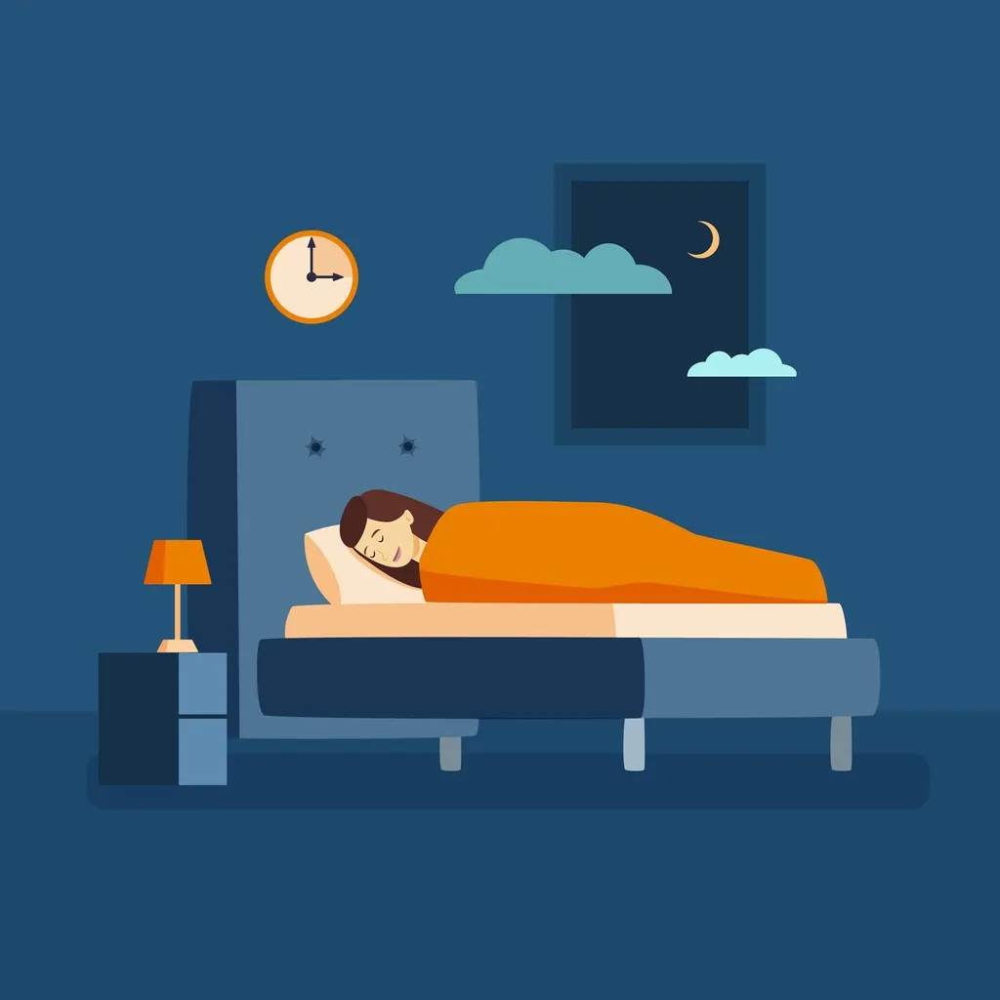
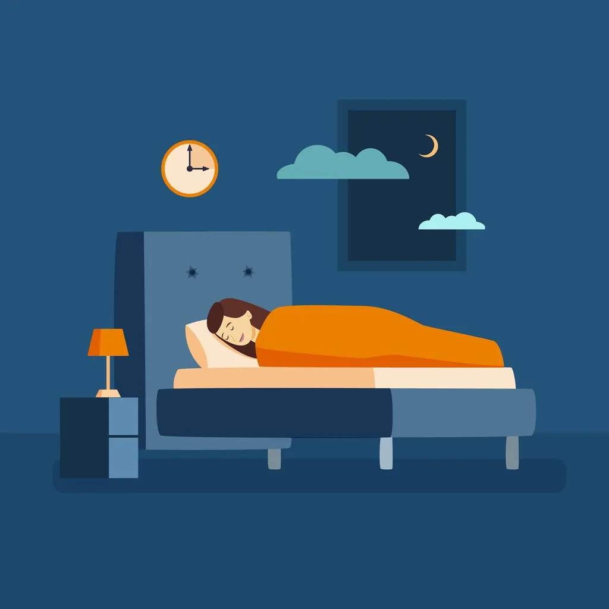

Lifestyle
Enhance Your Well-being Beyond Fitness and Nutrition
A wholesome lifestyle contributes to the maintenance and enhancement of individuals' health and overall well-being, offering effective means to alleviate stress. Numerous governmental and non-governmental entities are dedicated to advocating for healthy lifestyles. Adopting a healthy lifestyle is a continual endeavor, encompassing nutritious dietary habits, regular physical exercise, weight control, and effective stress management techniques.

 

Reference list
- Francis, J.R. 2020. How to Get Enough Sleep for a Healthy Lifestyle. [Online] Medium. [Accessed 26 Feb. 2024]. Available from: Click here
- Guide, H.F. 2021. 50 easy ways to eat more fruit and vegetables. [Online]. [Accessed 26 Feb. 2024]. Available from: Click here
- Khan, F. 2022. A Healthy Lifestyle. [Online]. [Accessed 26 Feb. 2024]. Available from:Click here
- Wikipedia. 2022. Healthy lifestyle. [Online]. [Accessed 26 February 2024]. Available from: Click here